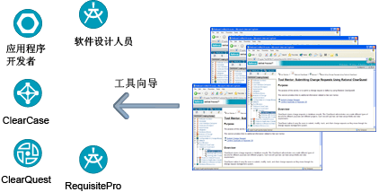

| 特定于工具的指导信息 |
 |
|
主要描述
 工具向导提供 Rational Unified Process 与其他 Rational 工具之间的一个链接 为了减少培训和启动时间，Rational Unified Process（RUP）包含了一组工具向导，这些工具向导提供关于如何使用特定工具来完成任务的分步指导信息。 工具向导提供项目中使用的流程和工具之间的链接。添加新工具与添加新工具向导一样容易，在使流程和工具之间仍紧密集成的同时允许自由选择。多数 Rational 工具都提供工具向导。 |
© Copyright IBM Corp. 1987, 2006. All Rights Reserved. |